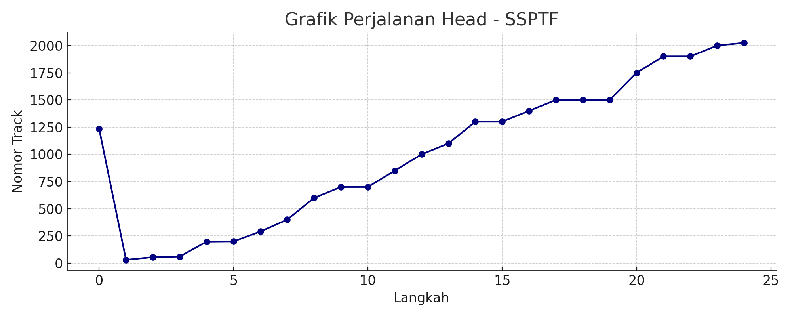

Tugas 1: Analisis Track Lintasan Disk
Soal :
Diketahui : Jumlah track = 2050, Posisi head berada di track : 1234 Urutan track yang perlu diakses yaitu : 1500, 1100,1750, 1900, [x1], 850, 60, 1300, 1400, 600, [x2], 1500, 1000, 30, 1900, [x3], 700, 1300, 55, 2025, [x4], 700, 1500, 200. Lakukan perhitungan banyaknya proses lintas track yang dilakukan menggunakan ketujuh algoritma (mulai dari PTPD hingga Circular Scan), dan gambarkan grafik perjalanan lintasan yang dilakukan serta tambahkan sedikit narasi sebagai penjelasannya.Catatan :
[x1] adalah tanggal lahir masing-masing x 10 [x2] adalah bulan lahir masing-masing x 100 [x3] adalah 4 digit tahun lahir masing-masing [x4] adalah 3 digit terakhir dari NIMTanggal lahir :
29 April 2000NIM terakhir :
198
Analisis Penjadwalan Disk
Pada tugas ini dilakukan simulasi 7 algoritma penjadwalan disk untuk mengakses sejumlah track dengan posisi awal head di track 1234 dan total track sebanyak 2050. Tujuannya adalah membandingkan efisiensi lintasan (jumlah track yang dilintasi) dari setiap algoritma.
Total Lintasan per Algoritma
| Algoritma | Total Lintasan (Track) |
|---|---|
| FCFS | 18125 |
| SSTF | 7563 |
| SCAN | 9707 |
| LOOK | 8759 |
| C-SCAN | 13590 |
| C-LOOK | 11506 |
| SSPTF | 15354 |
Grafik dan Penjelasan Setiap Algoritma
1. FCFS (First Come First Serve)
Detail Lintasan FCFS
Tabel di bawah ini merupakan hasil simulasi algoritma FCFS (First Come First Serve), menunjukkan urutan track yang diakses dan jarak (seek) dari posisi head ke track tersebut.
| No | Track | Seek Distance |
|---|---|---|
| 1 | 1500 | 266 |
| 2 | 1100 | 400 |
| 3 | 1750 | 650 |
| 4 | 1900 | 150 |
| 5 | 290 --- (tanggal lahir) | 1610 |
| 6 | 850 | 560 |
| 7 | 60 | 790 |
| 8 | 1300 | 1240 |
| 9 | 1400 | 100 |
| 10 | 600 | 800 |
| 11 | 400 --- (Bulan) | 200 |
| 12 | 1500 | 1100 |
| 13 | 1000 | 500 |
| 14 | 30 | 970 |
| 15 | 1900 | 1870 |
| 16 | 2000 --- (Tahun) | 100 |
| 17 | 700 | 1300 |
| 18 | 1300 | 600 |
| 19 | 55 | 1245 |
| 20 | 2025 | 1970 |
| 21 | 198 --- (NIM) | 1827 |
| 22 | 700 | 502 |
| 23 | 1500 | 800 |
| 24 | 200 | 1300 |
| TOTAL SEEK | 20850 | |
FCFS mengeksekusi permintaan berdasarkan urutan kedatangan. Karena tidak memperhatikan jarak antar track, algoritma ini menghasilkan lintasan terpanjang, yaitu 20850 track. Grafik menunjukkan pola zig-zag tidak beraturan karena pergerakan head yang tidak efisien.
2. SSTF (Shortest Seek Time First)
SSTF memilih permintaan yang paling dekat dari posisi head saat ini. Hasilnya sangat efisien dengan lintasan lebih pendek. Grafik menunjukkan head bergerak ke posisi terdekat berikutnya, meminimalkan jarak setiap langkah.
3. SCAN
SCAN menggerakkan head ke satu arah hingga ujung disk, lalu balik ke arah sebaliknya. Total lintasan lebih stabil. Grafik memperlihatkan pergerakan lurus ke satu arah sebelum berbalik seperti lift.
4. LOOK
LOOK mirip SCAN, tetapi hanya bergerak sejauh track permintaan terakhir. Lebih efisien dibanding SCAN. Grafik menunjukkan arah pergerakan yang lebih terfokus.
5. C-SCAN (Circular SCAN)
C-SCAN bergerak satu arah, setelah mencapai ujung langsung kembali ke bawah tanpa melayani permintaan saat turun. Grafik menunjukkan lompatan besar dari ujung atas ke bawah.
6. C-LOOK
C-LOOK seperti C-SCAN, tetapi hanya melayani permintaan yang ada tanpa menyentuh ujung disk. Grafik lebih padat karena tidak melewati area kosong di ujung disk.
7. SSPTF (Static Sorted Path Total First)
SSPTF menyortir semua permintaan dari kecil ke besar. Walau teratur, bisa menghasilkan pergerakan awal yang jauh jika head tidak dekat dengan nilai terkecil. Grafiknya teratur tetapi kurang efisien di awal.
Kesimpulan
Algoritma SSTF dan LOOK terbukti paling efisien dalam konteks ini. FCFS menghasilkan lintasan terpanjang karena tidak mempertimbangkan jarak antar permintaan. Pemilihan algoritma tergantung pada prioritas sistem (kecepatan vs keadilan).